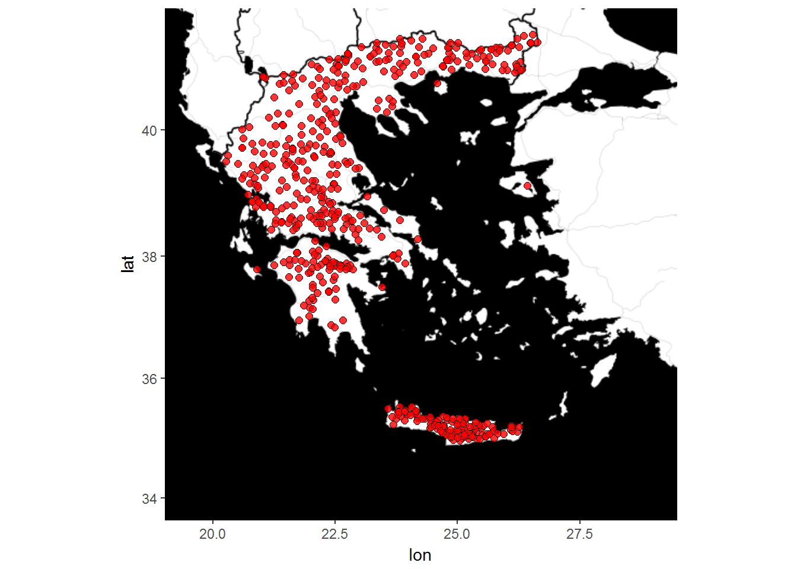

This vignette shows how to get Hydroscope’s stations with available time series for downloading. The sub-domains of Hydroscope with these data are:
The following code shows how to subset the data, using the package’s data sets:
library(hydroscoper)
data("stations")
data("timeseries")
# subset data
st_data <- subset(stations, subdomain == "kyy" | subdomain =="ypaat")
time_data <- subset(timeseries, subdomain == "kyy" | subdomain =="ypaat")From Hydroscope’s 2322 stations there are 1453 from the sub-domains kyy and ypaat. Out of these stations lets examine how many have time series:
Only 552 seems to have time series.
We can create a map with the stations with data, using the ggmap package, with:
library(ggmap)
# create map
map <- get_map(
location = c(lon = mean(stations$longitude, na.rm = TRUE),
lat = mean(stations$latitude, na.rm = TRUE)),
maptype = "toner-background",
color = 'bw',
zoom = 6)
p <- ggmap(map)
p +
geom_point(data = st_data,
aes(x = longitude, y = latitude),
fill = 'red',
shape = 21,
alpha = 0.8,
size = 2) +
scale_fill_brewer(palette = "Set1")+
xlim(19.5, 29) +
ylim(34, 41.5)
Although there is a large number of stations, there is a heterogeneity in the coverage of the country.
These stations record a different set of variables. With the following code we can examine the number of the available time series per variable.
head(sort(table(time_data$variable), decreasing = TRUE), n = 10)
#>
#> precipitation wind_direction snow
#> 712 269 265
#> level levminflood temperature_max
#> 101 79 72
#> temperature_min flow_gauge evaporation_estimation
#> 71 65 60
#> temperature_air
#> 43The variable of precipitation is recorded with various time steps per station. There are pluviograph records mostly with a time step of 30 minutes and rain gauge 24-hour measurements.